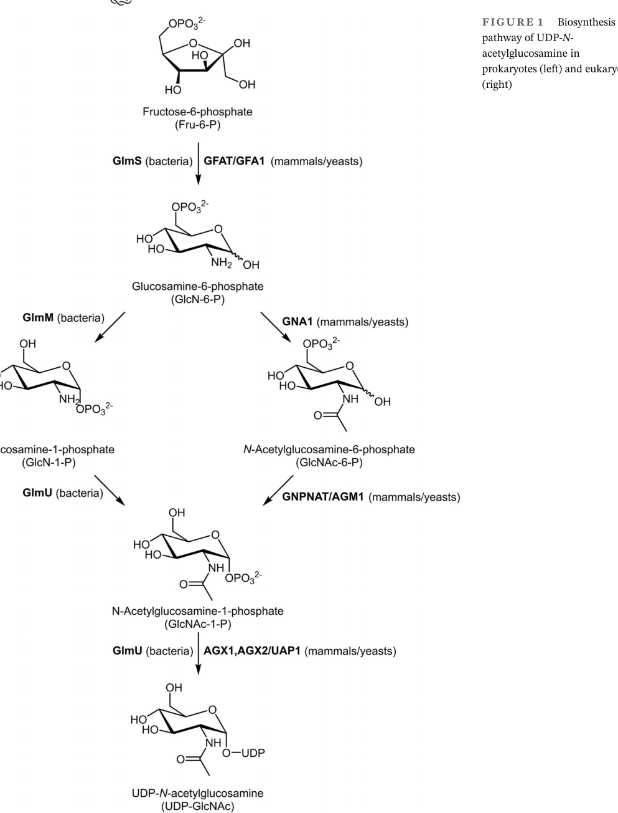

glmU encodes the bifunctional GlmU enzyme that catalyzes the final two steps of UDP-N-acetylglucosamine biosynthesis: acetyltransfer from acetyl-CoA to glucosamine-1-phosphate and uridylyltransfer from UTP to N-acetylglucosamine-1-phosphate. UDP-GlcNAc supplies peptidoglycan and lipid A biosynthesis.
| GO Term | Evidence | Action | Reason |
|---|---|---|---|
|
GO:0000287
magnesium ion binding
|
IEA
GO_REF:0000120 |
KEEP AS NON CORE |
Summary: Magnesium binding is supported for the uridylyltransferase domain but is ancillary.
Reason: Retain as a cofactor feature.
Supporting Evidence:
file:PSEPK/glmU/glmU-uniprot.txt
Binds 1 Mg(2+) ion per subunit
|
|
GO:0000902
cell morphogenesis
|
IEA
GO_REF:0000120 |
KEEP AS NON CORE |
Summary: Cell morphogenesis is a downstream consequence of UDP-GlcNAc-dependent cell envelope synthesis.
Reason: Retain as broad phenotypic/process context, not the core enzymatic function.
Supporting Evidence:
file:PSEPK/glmU/glmU-deep-research-falcon.md
perturbation of related PGN recycling in P. putida lowered intracellular UDP-GlcNAc ~4-fold and UDP-MurNAc ~6-fold, underscoring the pathway’s importance to envelope homeostasis.
|
|
GO:0003977
UDP-N-acetylglucosamine diphosphorylase activity
|
IEA
GO_REF:0000120 |
ACCEPT |
Summary: GlmU has UDP-N-acetylglucosamine diphosphorylase/uridylyltransferase activity.
Reason: Retain as one of the two core molecular functions.
Supporting Evidence:
file:PSEPK/glmU/glmU-uniprot.txt
Reaction=N-acetyl-alpha-D-glucosamine 1-phosphate + UTP
file:PSEPK/glmU/glmU-deep-research-falcon.md
cloned bacterial glmU homologs produce enzyme activity converting **GlcNAc-1-P to UDP-GlcNAc**
|
|
GO:0005737
cytoplasm
|
IEA
GO_REF:0000120 |
ACCEPT |
Summary: GlmU is a cytoplasmic enzyme.
Reason: Retain cytoplasmic localization.
Supporting Evidence:
file:PSEPK/glmU/glmU-uniprot.txt
SUBCELLULAR LOCATION: Cytoplasm
file:PSEPK/glmU/glmU-deep-research-falcon.md
which is consistent with GlmU functioning in the **cytoplasm**.
|
|
GO:0006048
UDP-N-acetylglucosamine biosynthetic process
|
IEA
GO_REF:0000120 |
ACCEPT |
Summary: GlmU catalyzes final steps in UDP-N-acetylglucosamine biosynthesis.
Reason: Retain the nucleotide-sugar biosynthetic process annotation.
Supporting Evidence:
file:PSEPK/glmU/glmU-uniprot.txt
biosynthetic pathway for UDP-N-acetylglucosamine
file:PSEPK/glmU/glmU-deep-research-falcon.md
UDP-GlcNAc is produced from fructose-6-phosphate through a short enzymatic pathway in which **GlmU is the final enzyme**, acting after GlmS and GlmM.
|
|
GO:0009245
lipid A biosynthetic process
|
IEA
GO_REF:0000120 |
MARK AS OVER ANNOTATED |
Summary: GlmU only supplies the shared precursor UDP-GlcNAc and is upstream of the dedicated Lpx enzymes that carry out lipid A biosynthesis; falcon frames the LPS connection as an indirect "contribution" rather than direct participation, so this represents an over-annotation by precursor supply rather than a function GlmU performs.
Reason: GlmU produces the general amino-sugar nucleotide UDP-GlcNAc but does not itself act in the lipid A-dedicated pathway; the link is precursor supply, more distal than even peptidoglycan precursor synthesis.
Supporting Evidence:
file:PSEPK/glmU/glmU-deep-research-falcon.md
UDP-GlcNAc is a central precursor for **peptidoglycan (PG)** biosynthesis and also contributes to broader envelope glycans, including (in Gram-negatives) **lipopolysaccharide (LPS)**-linked processes.
|
|
GO:0009252
peptidoglycan biosynthetic process
|
IEA
GO_REF:0000120 |
ACCEPT |
Summary: UDP-GlcNAc produced by GlmU is the committed precursor for peptidoglycan biosynthesis.
Reason: Retain peptidoglycan biosynthetic process context. Unlike the lipid A annotation (GO:0009245, marked over-annotated), peptidoglycan is the primary, essential, and universal bacterial sink for UDP-GlcNAc, whose N-acetylglucosamine residues are directly incorporated into the glycan strand via the dedicated UDP-MurNAc branch (MurA/MurB); lipid A, by contrast, is a Gram-negative-specific, secondary downstream consumer of the same general precursor, so the precursor-supply link is more distal and represents over-annotation there but core process context here.
Supporting Evidence:
file:PSEPK/glmU/glmU-uniprot.txt
UDP-N-acetylglucosamine
file:PSEPK/glmU/glmU-deep-research-falcon.md
**UDP-MurNAc** (the first “dedicated” PGN sugar nucleotide) is synthesized from **UDP-GlcNAc** by **MurA/MurB**, anchoring GlmU upstream of committed peptidoglycan synthesis.
|
|
GO:0016779
nucleotidyltransferase activity
|
IEA
GO_REF:0000117 |
MARK AS OVER ANNOTATED |
Summary: Nucleotidyltransferase activity is less specific than the UDP-N-acetylglucosamine diphosphorylase term.
Reason: Retain GO:0003977 instead.
Supporting Evidence:
file:PSEPK/glmU/glmU-uniprot.txt
transfer of uridine 5-monophosphate
|
|
GO:0019134
glucosamine-1-phosphate N-acetyltransferase activity
|
IEA
GO_REF:0000120 |
ACCEPT |
Summary: GlmU has glucosamine-1-phosphate N-acetyltransferase activity.
Reason: Retain as the second core molecular function.
Supporting Evidence:
file:PSEPK/glmU/glmU-uniprot.txt
Reaction=alpha-D-glucosamine 1-phosphate + acetyl-CoA
file:PSEPK/glmU/glmU-deep-research-falcon.md
**Acetyltransferase step:** glucosamine-1-phosphate (GlcN-1-P) + acetyl-CoA → **GlcNAc-1-P** + CoA.
|
Q: Are the acetyltransferase and uridylyltransferase activities independently regulated in KT2440 during envelope stress or nutrient limitation?
Suggested experts: Bacterial cell-envelope precursor biosynthesis experts
Experiment: Create domain-selective catalytic mutants of GlmU and measure UDP-GlcNAc, peptidoglycan precursor pools, lipid A precursors, and morphology under envelope stress.
Type: domain-selective mutagenesis with nucleotide-sugar metabolomics
The research report should be a detailed narrative explaining the function, biological processes, and localization of the gene product. Citations should be given for all claims.
You should prioritize authoritative reviews and primary scientific literature when conducting research. You can supplement
this with annotations you find in gene/protein databases, but these can be outdated or inaccurate.
We are specifically interested in the primary function of the gene - for enzymes, what reaction is catalyzed, and what is the substrate specificity? For transporters, what is the substrate? For structural proteins or adapters, what is the broader structural role? For signaling molecules, what is the role in the pathway.
We are interested in where in or outside the cell the gene product carries out its function.
We are also interested in the signaling or biochemical pathways in which the gene functions. We are less interested in broad pleiotropic effects, except where these elucidate the precise role.
Include evidence where possible. We are interested in both experimental evidence as well as inference from structure, evolution, or bioinformatic analysis. Precise studies should be prioritized over high-throughput, where available.
The target protein is UniProt Q88BX6, annotated as bifunctional GlmU (UDP-N-acetylglucosamine pyrophosphorylase / glucosamine-1-phosphate N-acetyltransferase) encoded by glmU in Pseudomonas putida KT2440. In the literature retrieved for this report, no source explicitly names UniProt Q88BX6 or locus tag PP_5411; therefore, statements about the KT2440 enzyme’s molecular function are homology-based inferences from conserved bacterial GlmU studies, while Pseudomonas-specific physiological context is supported by direct P. putida experiments on connected cell-wall precursor pools. This avoids conflating results from unrelated “glmU” genes in other organisms.
GlmU is the canonical bacterial bifunctional enzyme that catalyzes the two terminal steps in biosynthesis of the nucleotide sugar UDP-N-acetylglucosamine (UDP-GlcNAc). It contains two catalytic activities housed in distinct domains: a glucosamine-1-phosphate N-acetyltransferase activity and a GlcNAc-1-phosphate uridyltransferase (pyrophosphorylase) activity (EC 2.7.7.23 for the uridyltransferase reaction). (wyllie2022biosynthesisofuridine pages 1-2, wyllie2022biosynthesisofuridine pages 10-13)
Authoritative review synthesis indicates the two reactions occur sequentially:
1) Acetyltransferase step: glucosamine-1-phosphate (GlcN-1-P) + acetyl-CoA → GlcNAc-1-P + CoA.
2) Utidyltransferase step: GlcNAc-1-P + UTP → UDP-GlcNAc + PPi. (wyllie2022biosynthesisofuridine pages 10-13, wyllie2022biosynthesisofuridine pages 1-2)
Experimental genetics/biochemistry linking glmU to formation of UDP-GlcNAc is long-standing: cloned bacterial glmU homologs produce enzyme activity converting GlcNAc-1-P to UDP-GlcNAc, and complementation with E. coli glmU supports functional equivalence of the enzymatic step. (ullrich1995identificationofthe pages 1-2)
Substrate scope is narrow but not absolute: review-level synthesis reports highest efficiency for GlcN-1-P, with lower activity for related amino-sugar phosphates such as galactosamine-1-phosphate and N-acetylgalactosamine-1-phosphate. (wyllie2022biosynthesisofuridine pages 10-13)
UDP-GlcNAc is produced from fructose-6-phosphate through a short enzymatic pathway in which GlmU is the final enzyme, acting after GlmS and GlmM. (wyllie2022biosynthesisofuridine pages 1-2, wyllie2022biosynthesisofuridine media 350aa152)
A pathway schematic extracted from a recent, authoritative review is available and shows the GlmS/GlmM/GlmU steps leading to UDP-GlcNAc. (wyllie2022biosynthesisofuridine media 350aa152)
UDP-GlcNAc is a central precursor for peptidoglycan (PG) biosynthesis and also contributes to broader envelope glycans, including (in Gram-negatives) lipopolysaccharide (LPS)-linked processes. A classic primary study explicitly states UDP-GlcNAc is a key intermediate in biosynthesis of LPS and peptidoglycan, linking glmU to these pathways via its product. (ullrich1995identificationofthe pages 1-2)
In peptidoglycan precursor flow, UDP-MurNAc (the first “dedicated” PGN sugar nucleotide) is synthesized from UDP-GlcNAc by MurA/MurB, anchoring GlmU upstream of committed peptidoglycan synthesis. (hottmann2021peptidoglycansalvageenables pages 4-6)
GlmU is structurally described as a two-domain enzyme joined by a connecting element (review synthesis describes a long α-helical arm connecting domains), comprising:
- an N-terminal uridyltransferase domain (contains conserved “pyrophosphorylase fingerprint” motifs), and
- a C-terminal LβH-type acetyltransferase domain.
GlmU forms a homotrimer, and trimer formation is important for acetyltransferase activity. (wyllie2022biosynthesisofuridine pages 10-13, mochalkin2007characterizationofsubstrate pages 2-4)
A structural/domain depiction (from the same authoritative review source) is available as a cropped figure illustrating the N-terminal uridyltransferase and C-terminal acetyltransferase arrangement. (wyllie2022biosynthesisofuridine media c32620ff)
Primary structural/enzymology work (Protein Science) supports an ordered catalytic picture:
- acetyltransferase acts first and releases GlcNAc-1-P, which then binds the uridyltransferase site (i.e., no obligate substrate channeling), and
- in the uridyltransferase step, UTP binds before GlcNAc-1-P, and product binding (UDP-GlcNAc) induces a pronounced open→closed conformational change at the uridyltransferase active site. (mochalkin2007characterizationofsubstrate pages 2-4)
A recent pathway review reports that, under typical experimental conditions, the acetyltransferase step proceeds at an approximately 4× higher turnover than the uridyltransferase step (approximately ~80 s⁻¹ vs ~20 s⁻¹), supporting the view that acetylation generally precedes uridylation in vivo and in vitro. (wyllie2022biosynthesisofuridine pages 10-13)
Direct experimental localization for P. putida KT2440 GlmU (Q88BX6) was not found in the retrieved sources. However, the pathway intermediates (sugar phosphates and nucleotide sugars) are intracellular/cytosolic metabolites, and multiple studies assay UDP-GlcNAc and UDP-MurNAc from cytosolic fractions in P. putida (in the context of peptidoglycan recycling and precursor pool measurements), which is consistent with GlmU functioning in the cytoplasm. (borisova2017thenacetylmuramic pages 4-7)
Although direct biochemical characterization of KT2440 GlmU (Q88BX6) was not available in the retrieved corpus, P. putida-specific experiments demonstrate that UDP-GlcNAc is a metabolite whose cellular abundance is tightly coupled to peptidoglycan precursor metabolism.
A P. putida study of peptidoglycan recycling (mBio, 2017) measured nucleotide-sugar pools in cytosolic extracts and found that disrupting a recycling step (ΔmupP) reduced precursor pools, including UDP-GlcNAc and UDP-MurNAc, by ~4-fold and ~6-fold, respectively, relative to wild type. This shows that in Pseudomonas physiology the UDP-GlcNAc node (which requires GlmU for de novo synthesis) is central to maintaining PGN precursor pools. (borisova2017thenacetylmuramic pages 7-9)
Because UDP-GlcNAc is essential for peptidoglycan synthesis, and because parts of the pathway include prokaryote-specific enzymatic steps, GlmU is widely discussed as a potential antibacterial target and is repeatedly considered in “underexploited antibiotic target” reviews of UDP-GlcNAc biosynthesis. (wyllie2022biosynthesisofuridine pages 1-2, agarwal2024depletionofessential pages 1-2)
These examples illustrate two distinct real-world application modes: (i) expression-level perturbation of PGN biosynthetic genes during antimicrobial treatment, and (ii) target-centric computational lead identification pipelines.
Across authoritative sources, the consensus functional interpretation is that GlmU is a core housekeeping enzyme required to sustain the UDP-GlcNAc supply needed for cell envelope biogenesis, especially peptidoglycan. The enzyme’s bifunctionality, separable active sites, trimeric architecture, and ordered mechanism are repeatedly emphasized as key biochemical features that can be exploited for inhibitor discovery (e.g., distinct binding sites and conformational transitions at the uridyltransferase domain). (wyllie2022biosynthesisofuridine pages 1-2, mochalkin2007characterizationofsubstrate pages 2-4)
The following evidence table consolidates the key functional-annotation points and the most direct supporting sources.
| Aspect | Key points | Best supporting citations (context IDs) | Key source metadata (first author year, journal, DOI URL) |
|---|---|---|---|
| Reaction 1 acetyltransferase | GlmU catalyzes acetylation of glucosamine-1-phosphate (GlcN-1-P) using acetyl-CoA to form N-acetylglucosamine-1-phosphate (GlcNAc-1-P); this is the first of the two terminal UDP-GlcNAc pathway steps and is generally faster than the uridyltransferase step. Review data report approximate turnover rates of ~80 s^-1 for acetyltransferase versus ~20 s^-1 for uridyltransferase under typical conditions. | (wyllie2022biosynthesisofuridine pages 10-13, wyllie2022biosynthesisofuridine pages 1-2) | Wyllie 2022, IUBMB Life, https://doi.org/10.1002/iub.2664 |
| Reaction 2 uridyltransferase | GlmU catalyzes transfer of UMP from UTP to GlcNAc-1-P to yield UDP-GlcNAc + PPi; classic bacterial glmU studies experimentally verified conversion of GlcNAc-1-P into UDP-GlcNAc. | (wyllie2022biosynthesisofuridine pages 10-13, ullrich1995identificationofthe pages 1-2, ullrich1995identificationofthe pages 6-7) | Wyllie 2022, IUBMB Life, https://doi.org/10.1002/iub.2664; Ullrich 1995, Journal of Bacteriology, https://doi.org/10.1128/jb.177.23.6902-6909.1995 |
| Pathway role | GlmU performs the final two steps of bacterial UDP-GlcNAc biosynthesis downstream of GlmS and GlmM, making a core amino-sugar nucleotide essential for cell-envelope precursor production. | (wyllie2022biosynthesisofuridine pages 1-2, wyllie2022biosynthesisofuridine media 350aa152) | Wyllie 2022, IUBMB Life, https://doi.org/10.1002/iub.2664 |
| Downstream processes | UDP-GlcNAc is a key precursor for peptidoglycan biosynthesis and also contributes to lipopolysaccharide/cell-envelope glycan pathways; UDP-MurNAc is synthesized from UDP-GlcNAc via MurA/MurB. | (hottmann2021peptidoglycansalvageenables pages 4-6, ullrich1995identificationofthe pages 1-2, wyllie2022biosynthesisofuridine pages 1-2) | Hottmann 2021, Microbial Physiology, https://doi.org/10.1159/000516751; Ullrich 1995, Journal of Bacteriology, https://doi.org/10.1128/jb.177.23.6902-6909.1995; Wyllie 2022, IUBMB Life, https://doi.org/10.1002/iub.2664 |
| Domain architecture / oligomerization | Canonical bacterial GlmU is bifunctional, with an N-terminal uridyltransferase domain, a C-terminal LβH-type acetyltransferase domain, and a connecting α-helical arm; the enzyme forms a trimer, and trimerization is important for acetyltransferase activity. | (wyllie2022biosynthesisofuridine pages 10-13, mochalkin2007characterizationofsubstrate pages 2-4, wyllie2022biosynthesisofuridine media 350aa152) | Wyllie 2022, IUBMB Life, https://doi.org/10.1002/iub.2664; Mochalkin 2007, Protein Science, https://doi.org/10.1110/ps.073135107 |
| Mechanism / kinetics | Mechanistic studies support ordered catalysis: acetyltransferase acts first, GlcNAc-1-P is released, then binds the uridyltransferase site; no obligate substrate channeling was observed. For uridyltransferase, UTP binds before GlcNAc-1-P, and UDP-GlcNAc binding induces an open→closed conformational change. Substrate scope is highest for GlcN-1-P, with lower efficiency reported for galactosamine-1-P and N-acetylgalactosamine-1-P. | (wyllie2022biosynthesisofuridine pages 10-13, mochalkin2007characterizationofsubstrate pages 2-4, mochalkin2007characterizationofsubstrate pages 1-2) | Wyllie 2022, IUBMB Life, https://doi.org/10.1002/iub.2664; Mochalkin 2007, Protein Science, https://doi.org/10.1110/ps.073135107 |
| Localization (if available) | Direct localization data for P. putida KT2440 Q88BX6 were not found in the retrieved literature. Available evidence consistently treats GlmU as a soluble intracellular enzyme acting on cytosolic nucleotide-sugar intermediates; related Pseudomonas metabolite studies measured UDP-GlcNAc in cytosolic fractions, consistent with cytoplasmic function. | (zhang2008expressionessentialityand pages 1-2, borisova2017thenacetylmuramic pages 4-7) | Zhang 2008, Int. J. Biochem. Cell Biol., https://doi.org/10.1016/j.biocel.2008.05.003; Borisova 2017, mBio, https://doi.org/10.1128/mBio.00092-17 |
| Pseudomonas-specific context | Direct primary-literature evidence specifically naming PP_5411 or UniProt Q88BX6 was not retrieved, so annotation for the exact KT2440 entry should be considered strong homology-based inference rather than directly organism-specific biochemistry. In Pseudomonas, UDP-GlcNAc sits upstream of PGN precursor formation, and perturbation of related PGN recycling in P. putida lowered intracellular UDP-GlcNAc ~4-fold and UDP-MurNAc ~6-fold, underscoring the pathway’s importance to envelope homeostasis. | (borisova2017thenacetylmuramic pages 7-9, borisova2017thenacetylmuramic pages 1-2) | Borisova 2017, mBio, https://doi.org/10.1128/mBio.00092-17 |
| Recent 2023–2024 developments / applications | Recent work continues to position GlmU/UDP-GlcNAc synthesis as an antimicrobial target. In MRSA, prodigiosin had MIC 2.5 mg/L; at 1.25 mg/L it inhibited biofilm formation by 76.24%, and transcriptomics showed glmU among downregulated peptidoglycan genes. A 2023 subtractive-proteomics study prioritized glmU in Burkholderia cepacia complex and screened 12,000 ZINC compounds, highlighting ZINC06055530 with 200 ns MD follow-up. Reviews and pathway-target studies in 2024 further emphasize prokaryote-specificity of the pathway as drug-target rationale. | (liu2024transcriptomicanalysisof pages 1-2, hassan2023subtractivesequenceanalysis pages 1-3, agarwal2024depletionofessential pages 1-2) | Liu 2024, Frontiers in Microbiology, https://doi.org/10.3389/fmicb.2024.1333526; Hassan 2023, Molecular Diversity, https://doi.org/10.1007/s11030-022-10584-5; Agarwal 2024, Communications Biology, https://doi.org/10.1038/s42003-024-06620-9 |
Table: This table summarizes the strongest evidence supporting functional annotation of Pseudomonas putida KT2440 glmU (UniProt Q88BX6), while clearly separating direct species-specific evidence from broader conserved bacterial GlmU knowledge. It is useful as a compact reference for reaction chemistry, pathway placement, structural mechanism, and recent translational relevance.
Recommended primary molecular function (most supported):
Bifunctional enzyme catalyzing (1) acetylation of GlcN-1-P to GlcNAc-1-P using acetyl-CoA, and (2) UTP-dependent uridyltransfer producing UDP-GlcNAc + PPi. (wyllie2022biosynthesisofuridine pages 10-13, wyllie2022biosynthesisofuridine pages 1-2)
Biological process:
UDP-GlcNAc biosynthesis (final two steps), feeding peptidoglycan precursor production and, in Gram-negatives, broader envelope glycan metabolism (including LPS-associated pathways). (wyllie2022biosynthesisofuridine pages 1-2, ullrich1995identificationofthe pages 1-2)
Cellular component / localization (best-supported inference):
Likely cytoplasmic (soluble intracellular enzyme acting on cytosolic metabolites); direct localization experiments for KT2440 Q88BX6 were not retrieved. (borisova2017thenacetylmuramic pages 4-7)
Pathway coupling in Pseudomonas (organism-context evidence):
Perturbing PGN recycling in P. putida decreases cytosolic UDP-GlcNAc (~4×) and UDP-MurNAc (~6×), consistent with tight control of cell-wall precursor pools in this organism and underscoring the centrality of UDP-GlcNAc production (and thus GlmU activity) to envelope homeostasis. (borisova2017thenacetylmuramic pages 7-9)
Key sources used here include: Wyllie et al., 2022 (IUBMB Life; published July 2022; https://doi.org/10.1002/iub.2664), Ullrich & van Putten, 1995 (J. Bacteriol.; published Dec 1995; https://doi.org/10.1128/jb.177.23.6902-6909.1995), Mochalkin et al., 2007 (Protein Science; published Dec 2007; https://doi.org/10.1110/ps.073135107), Borisova et al., 2017 (mBio; published 28 Mar 2017; https://doi.org/10.1128/mBio.00092-17), Liu et al., 2024 (Frontiers in Microbiology; published Jan 2024; https://doi.org/10.3389/fmicb.2024.1333526), and Hassan et al., 2023 (Molecular Diversity; published Dec 2023; https://doi.org/10.1007/s11030-022-10584-5). (wyllie2022biosynthesisofuridine pages 10-13, ullrich1995identificationofthe pages 1-2, mochalkin2007characterizationofsubstrate pages 2-4, borisova2017thenacetylmuramic pages 1-2, liu2024transcriptomicanalysisof pages 1-2, hassan2023subtractivesequenceanalysis pages 1-3)
References
(wyllie2022biosynthesisofuridine pages 1-2): Jessica A. Wyllie, Mirrin V. McKay, Andrew S. Barrow, and Tatiana P. Soares da Costa. Biosynthesis of uridine diphosphate n‐acetylglucosamine: an underexploited pathway in the search for novel antibiotics? Iubmb Life, 74:1232-1252, Jul 2022. URL: https://doi.org/10.1002/iub.2664, doi:10.1002/iub.2664. This article has 20 citations and is from a peer-reviewed journal.
(wyllie2022biosynthesisofuridine pages 10-13): Jessica A. Wyllie, Mirrin V. McKay, Andrew S. Barrow, and Tatiana P. Soares da Costa. Biosynthesis of uridine diphosphate n‐acetylglucosamine: an underexploited pathway in the search for novel antibiotics? Iubmb Life, 74:1232-1252, Jul 2022. URL: https://doi.org/10.1002/iub.2664, doi:10.1002/iub.2664. This article has 20 citations and is from a peer-reviewed journal.
(ullrich1995identificationofthe pages 1-2): J. Ullrich and J. V. van Putten. Identification of the gonococcal glmu gene encoding the enzyme n-acetylglucosamine 1-phosphate uridyltransferase involved in the synthesis of udp-glcnac. Journal of Bacteriology, 177:6902-6909, Dec 1995. URL: https://doi.org/10.1128/jb.177.23.6902-6909.1995, doi:10.1128/jb.177.23.6902-6909.1995. This article has 20 citations and is from a peer-reviewed journal.
(wyllie2022biosynthesisofuridine media 350aa152): Jessica A. Wyllie, Mirrin V. McKay, Andrew S. Barrow, and Tatiana P. Soares da Costa. Biosynthesis of uridine diphosphate n‐acetylglucosamine: an underexploited pathway in the search for novel antibiotics? Iubmb Life, 74:1232-1252, Jul 2022. URL: https://doi.org/10.1002/iub.2664, doi:10.1002/iub.2664. This article has 20 citations and is from a peer-reviewed journal.
(hottmann2021peptidoglycansalvageenables pages 4-6): Isabel Hottmann, Marina Borisova, C. Schäffer, and C. Mayer. Peptidoglycan salvage enables the periodontal pathogen tannerella forsythia to survive within the oral microbial community. Microbial Physiology, 31:123-134, Jun 2021. URL: https://doi.org/10.1159/000516751, doi:10.1159/000516751. This article has 17 citations.
(mochalkin2007characterizationofsubstrate pages 2-4): Igor Mochalkin, Sandra Lightle, Yaqi Zhu, Jeffrey F. Ohren, Cindy Spessard, Nickolay Y. Chirgadze, Craig Banotai, Michael Melnick, and Laura McDowell. Characterization of substrate binding and catalysis in the potential antibacterial target n‐acetylglucosamine‐1‐phosphate uridyltransferase (glmu). Protein Science, 16:2657-2666, Dec 2007. URL: https://doi.org/10.1110/ps.073135107, doi:10.1110/ps.073135107. This article has 57 citations and is from a peer-reviewed journal.
(wyllie2022biosynthesisofuridine media c32620ff): Jessica A. Wyllie, Mirrin V. McKay, Andrew S. Barrow, and Tatiana P. Soares da Costa. Biosynthesis of uridine diphosphate n‐acetylglucosamine: an underexploited pathway in the search for novel antibiotics? Iubmb Life, 74:1232-1252, Jul 2022. URL: https://doi.org/10.1002/iub.2664, doi:10.1002/iub.2664. This article has 20 citations and is from a peer-reviewed journal.
(borisova2017thenacetylmuramic pages 4-7): Marina Borisova, Jonathan Gisin, and Christoph Mayer. The n -acetylmuramic acid 6-phosphate phosphatase mupp completes the pseudomonas peptidoglycan recycling pathway leading to intrinsic fosfomycin resistance. mBio, May 2017. URL: https://doi.org/10.1128/mbio.00092-17, doi:10.1128/mbio.00092-17. This article has 41 citations and is from a domain leading peer-reviewed journal.
(borisova2017thenacetylmuramic pages 7-9): Marina Borisova, Jonathan Gisin, and Christoph Mayer. The n -acetylmuramic acid 6-phosphate phosphatase mupp completes the pseudomonas peptidoglycan recycling pathway leading to intrinsic fosfomycin resistance. mBio, May 2017. URL: https://doi.org/10.1128/mbio.00092-17, doi:10.1128/mbio.00092-17. This article has 41 citations and is from a domain leading peer-reviewed journal.
(agarwal2024depletionofessential pages 1-2): Meetu Agarwal, Ashima Bhaskar, Biplab Singha, Suparba Mukhopadhyay, Isha Pahuja, Archna Singh, Shivam Chaturvedi, Nisheeth Agarwal, Ved Prakash Dwivedi, and Vinay Kumar Nandicoori. Depletion of essential mycobacterial gene glmm reduces pathogen survival and induces host-protective immune responses against tuberculosis. Communications Biology, Aug 2024. URL: https://doi.org/10.1038/s42003-024-06620-9, doi:10.1038/s42003-024-06620-9. This article has 1 citations and is from a peer-reviewed journal.
(liu2024transcriptomicanalysisof pages 1-2): Xiaoxia Liu, Zonglin Wang, Zhongyu You, Wei Wang, Yujie Wang, Wenjing Wu, Yongjia Peng, Suping Zhang, Yinan Yun, and Jin Zhang. Transcriptomic analysis of cell envelope inhibition by prodigiosin in methicillin-resistant staphylococcus aureus. Frontiers in Microbiology, Jan 2024. URL: https://doi.org/10.3389/fmicb.2024.1333526, doi:10.3389/fmicb.2024.1333526. This article has 8 citations and is from a peer-reviewed journal.
(hassan2023subtractivesequenceanalysis pages 1-3): Syed Shah Hassan, Rida Shams, Ihosvany Camps, Zarrin Basharat, Saman Sohail, Yasmin Khan, Asad Ullah, Muhammad Irfan, Javed Ali, Muhammad Bilal, and Carlos M. Morel. Subtractive sequence analysis aided druggable targets mining in burkholderia cepacia complex and finding inhibitors through bioinformatics approach. Molecular Diversity, 27:1-25, Dec 2023. URL: https://doi.org/10.1007/s11030-022-10584-5, doi:10.1007/s11030-022-10584-5. This article has 13 citations and is from a peer-reviewed journal.
(ullrich1995identificationofthe pages 6-7): J. Ullrich and J. V. van Putten. Identification of the gonococcal glmu gene encoding the enzyme n-acetylglucosamine 1-phosphate uridyltransferase involved in the synthesis of udp-glcnac. Journal of Bacteriology, 177:6902-6909, Dec 1995. URL: https://doi.org/10.1128/jb.177.23.6902-6909.1995, doi:10.1128/jb.177.23.6902-6909.1995. This article has 20 citations and is from a peer-reviewed journal.
(mochalkin2007characterizationofsubstrate pages 1-2): Igor Mochalkin, Sandra Lightle, Yaqi Zhu, Jeffrey F. Ohren, Cindy Spessard, Nickolay Y. Chirgadze, Craig Banotai, Michael Melnick, and Laura McDowell. Characterization of substrate binding and catalysis in the potential antibacterial target n‐acetylglucosamine‐1‐phosphate uridyltransferase (glmu). Protein Science, 16:2657-2666, Dec 2007. URL: https://doi.org/10.1110/ps.073135107, doi:10.1110/ps.073135107. This article has 57 citations and is from a peer-reviewed journal.
(zhang2008expressionessentialityand pages 1-2): Wenli Zhang, Victoria C. Jones, Michael S. Scherman, Sebabrata Mahapatra, Dean Crick, Suresh Bhamidi, Yi Xin, Michael R. McNeil, and Yufang Ma. Expression, essentiality, and a microtiter plate assay for mycobacterial glmu, the bifunctional glucosamine-1-phosphate acetyltransferase and n-acetylglucosamine-1-phosphate uridyltransferase. The International Journal of Biochemistry & Cell Biology, 40(11):2560-2571, Jan 2008. URL: https://doi.org/10.1016/j.biocel.2008.05.003, doi:10.1016/j.biocel.2008.05.003. This article has 91 citations.
(borisova2017thenacetylmuramic pages 1-2): Marina Borisova, Jonathan Gisin, and Christoph Mayer. The n -acetylmuramic acid 6-phosphate phosphatase mupp completes the pseudomonas peptidoglycan recycling pathway leading to intrinsic fosfomycin resistance. mBio, May 2017. URL: https://doi.org/10.1128/mbio.00092-17, doi:10.1128/mbio.00092-17. This article has 41 citations and is from a domain leading peer-reviewed journal.

id: Q88BX6
gene_symbol: glmU
product_type: PROTEIN
status: COMPLETE
taxon:
id: NCBITaxon:160488
label: Pseudomonas putida (strain ATCC 47054 / DSM 6125 / CFBP 8728 / NCIMB 11950 / KT2440)
description: 'glmU encodes the bifunctional GlmU enzyme that catalyzes the final two steps of UDP-N-acetylglucosamine biosynthesis: acetyltransfer from acetyl-CoA to glucosamine-1-phosphate and uridylyltransfer from UTP to N-acetylglucosamine-1-phosphate. UDP-GlcNAc supplies peptidoglycan and lipid A biosynthesis.'
existing_annotations:
- term:
id: GO:0000287
label: magnesium ion binding
evidence_type: IEA
original_reference_id: GO_REF:0000120
review:
summary: Magnesium binding is supported for the uridylyltransferase domain but is ancillary.
action: KEEP_AS_NON_CORE
reason: Retain as a cofactor feature.
supported_by:
- reference_id: file:PSEPK/glmU/glmU-uniprot.txt
supporting_text: Binds 1 Mg(2+) ion per subunit
- term:
id: GO:0000902
label: cell morphogenesis
evidence_type: IEA
original_reference_id: GO_REF:0000120
review:
summary: Cell morphogenesis is a downstream consequence of UDP-GlcNAc-dependent cell envelope synthesis.
action: KEEP_AS_NON_CORE
reason: Retain as broad phenotypic/process context, not the core enzymatic function.
supported_by:
- reference_id: file:PSEPK/glmU/glmU-deep-research-falcon.md
supporting_text: |-
perturbation of related PGN recycling in P. putida lowered intracellular UDP-GlcNAc ~4-fold and UDP-MurNAc ~6-fold, underscoring the pathway’s importance to envelope homeostasis.
- term:
id: GO:0003977
label: UDP-N-acetylglucosamine diphosphorylase activity
evidence_type: IEA
original_reference_id: GO_REF:0000120
review:
summary: GlmU has UDP-N-acetylglucosamine diphosphorylase/uridylyltransferase activity.
action: ACCEPT
reason: Retain as one of the two core molecular functions.
supported_by:
- reference_id: file:PSEPK/glmU/glmU-uniprot.txt
supporting_text: Reaction=N-acetyl-alpha-D-glucosamine 1-phosphate + UTP
- reference_id: file:PSEPK/glmU/glmU-deep-research-falcon.md
supporting_text: |-
cloned bacterial glmU homologs produce enzyme activity converting **GlcNAc-1-P to UDP-GlcNAc**
- term:
id: GO:0005737
label: cytoplasm
evidence_type: IEA
original_reference_id: GO_REF:0000120
review:
summary: GlmU is a cytoplasmic enzyme.
action: ACCEPT
reason: Retain cytoplasmic localization.
supported_by:
- reference_id: file:PSEPK/glmU/glmU-uniprot.txt
supporting_text: 'SUBCELLULAR LOCATION: Cytoplasm'
- reference_id: file:PSEPK/glmU/glmU-deep-research-falcon.md
supporting_text: |-
which is consistent with GlmU functioning in the **cytoplasm**.
- term:
id: GO:0006048
label: UDP-N-acetylglucosamine biosynthetic process
evidence_type: IEA
original_reference_id: GO_REF:0000120
review:
summary: GlmU catalyzes final steps in UDP-N-acetylglucosamine biosynthesis.
action: ACCEPT
reason: Retain the nucleotide-sugar biosynthetic process annotation.
supported_by:
- reference_id: file:PSEPK/glmU/glmU-uniprot.txt
supporting_text: biosynthetic pathway for UDP-N-acetylglucosamine
- reference_id: file:PSEPK/glmU/glmU-deep-research-falcon.md
supporting_text: |-
UDP-GlcNAc is produced from fructose-6-phosphate through a short enzymatic pathway in which **GlmU is the final enzyme**, acting after GlmS and GlmM.
- term:
id: GO:0009245
label: lipid A biosynthetic process
evidence_type: IEA
original_reference_id: GO_REF:0000120
review:
summary: GlmU only supplies the shared precursor UDP-GlcNAc and is upstream of the
dedicated Lpx enzymes that carry out lipid A biosynthesis; falcon frames the LPS
connection as an indirect "contribution" rather than direct participation, so this
represents an over-annotation by precursor supply rather than a function GlmU performs.
action: MARK_AS_OVER_ANNOTATED
reason: GlmU produces the general amino-sugar nucleotide UDP-GlcNAc but does not
itself act in the lipid A-dedicated pathway; the link is precursor supply, more
distal than even peptidoglycan precursor synthesis.
supported_by:
- reference_id: file:PSEPK/glmU/glmU-deep-research-falcon.md
supporting_text: |-
UDP-GlcNAc is a central precursor for **peptidoglycan (PG)** biosynthesis and also contributes to broader envelope glycans, including (in Gram-negatives) **lipopolysaccharide (LPS)**-linked processes.
- term:
id: GO:0009252
label: peptidoglycan biosynthetic process
evidence_type: IEA
original_reference_id: GO_REF:0000120
review:
summary: UDP-GlcNAc produced by GlmU is the committed precursor for peptidoglycan biosynthesis.
action: ACCEPT
reason: Retain peptidoglycan biosynthetic process context. Unlike the lipid A annotation
(GO:0009245, marked over-annotated), peptidoglycan is the primary, essential, and universal
bacterial sink for UDP-GlcNAc, whose N-acetylglucosamine residues are directly incorporated
into the glycan strand via the dedicated UDP-MurNAc branch (MurA/MurB); lipid A, by contrast,
is a Gram-negative-specific, secondary downstream consumer of the same general precursor, so
the precursor-supply link is more distal and represents over-annotation there but core process
context here.
supported_by:
- reference_id: file:PSEPK/glmU/glmU-uniprot.txt
supporting_text: UDP-N-acetylglucosamine
- reference_id: file:PSEPK/glmU/glmU-deep-research-falcon.md
supporting_text: |-
**UDP-MurNAc** (the first “dedicated” PGN sugar nucleotide) is synthesized from **UDP-GlcNAc** by **MurA/MurB**, anchoring GlmU upstream of committed peptidoglycan synthesis.
- term:
id: GO:0016779
label: nucleotidyltransferase activity
evidence_type: IEA
original_reference_id: GO_REF:0000117
review:
summary: Nucleotidyltransferase activity is less specific than the UDP-N-acetylglucosamine diphosphorylase term.
action: MARK_AS_OVER_ANNOTATED
reason: Retain GO:0003977 instead.
supported_by:
- reference_id: file:PSEPK/glmU/glmU-uniprot.txt
supporting_text: transfer of uridine 5-monophosphate
- term:
id: GO:0019134
label: glucosamine-1-phosphate N-acetyltransferase activity
evidence_type: IEA
original_reference_id: GO_REF:0000120
review:
summary: GlmU has glucosamine-1-phosphate N-acetyltransferase activity.
action: ACCEPT
reason: Retain as the second core molecular function.
supported_by:
- reference_id: file:PSEPK/glmU/glmU-uniprot.txt
supporting_text: Reaction=alpha-D-glucosamine 1-phosphate + acetyl-CoA
- reference_id: file:PSEPK/glmU/glmU-deep-research-falcon.md
supporting_text: |-
**Acetyltransferase step:** glucosamine-1-phosphate (GlcN-1-P) + acetyl-CoA → **GlcNAc-1-P** + CoA.
references:
- id: GO_REF:0000120
title: Combined automated GO annotation using multiple IEA methods.
findings:
- statement: Automated source annotation reviewed against UniProt and literature evidence for this gene.
- id: GO_REF:0000117
title: Electronic Gene Ontology annotations created by ARBA machine learning models.
findings:
- statement: Automated source annotation reviewed against UniProt and literature evidence for this gene.
- id: file:PSEPK/glmU/glmU-uniprot.txt
title: UniProtKB reviewed entry for glmU
findings:
- statement: UniProt identifies glmU function, pathway placement, catalytic activity, and/or localization used to review GOA annotations.
- id: file:PSEPK/glmU/glmU-deep-research-falcon.md
title: Falcon (Edison Scientific) deep research report for glmU (Q88BX6, P. putida KT2440)
findings:
- supporting_text: |-
It contains two catalytic activities housed in distinct domains: a **glucosamine-1-phosphate *N*-acetyltransferase** activity and a **GlcNAc-1-phosphate uridyltransferase (pyrophosphorylase)** activity
reference_section_type: OTHER
- supporting_text: |-
UDP-GlcNAc is produced from fructose-6-phosphate through a short enzymatic pathway in which **GlmU is the final enzyme**, acting after GlmS and GlmM.
reference_section_type: OTHER
- supporting_text: |-
UDP-GlcNAc is a central precursor for **peptidoglycan (PG)** biosynthesis and also contributes to broader envelope glycans, including (in Gram-negatives) **lipopolysaccharide (LPS)**-linked processes.
reference_section_type: OTHER
- supporting_text: |-
**UDP-MurNAc** (the first “dedicated” PGN sugar nucleotide) is synthesized from **UDP-GlcNAc** by **MurA/MurB**, anchoring GlmU upstream of committed peptidoglycan synthesis.
reference_section_type: OTHER
- supporting_text: |-
GlmU forms a **homotrimer**, and trimer formation is important for acetyltransferase activity.
reference_section_type: OTHER
- supporting_text: |-
which is consistent with GlmU functioning in the **cytoplasm**.
reference_section_type: OTHER
- supporting_text: |-
perturbation of related PGN recycling in P. putida lowered intracellular UDP-GlcNAc ~4-fold and UDP-MurNAc ~6-fold, underscoring the pathway’s importance to envelope homeostasis.
reference_section_type: OTHER
core_functions:
- description: The C-terminal GlmU acetyltransferase domain converts glucosamine-1-phosphate to N-acetylglucosamine-1-phosphate.
molecular_function:
id: GO:0019134
label: glucosamine-1-phosphate N-acetyltransferase activity
directly_involved_in:
- id: GO:0006048
label: UDP-N-acetylglucosamine biosynthetic process
locations:
- id: GO:0005737
label: cytoplasm
supported_by:
- reference_id: file:PSEPK/glmU/glmU-uniprot.txt
supporting_text: Reaction=alpha-D-glucosamine 1-phosphate + acetyl-CoA
- reference_id: file:PSEPK/glmU/glmU-uniprot.txt
supporting_text: C-terminal domain catalyzes the transfer of acetyl group
- reference_id: file:PSEPK/glmU/glmU-deep-research-falcon.md
supporting_text: |-
a **C-terminal LβH-type acetyltransferase** domain.
- reference_id: file:PSEPK/glmU/glmU-deep-research-falcon.md
supporting_text: |-
GlmU forms a **homotrimer**, and trimer formation is important for acetyltransferase activity.
- description: The N-terminal GlmU uridylyltransferase domain converts N-acetylglucosamine-1-phosphate to UDP-N-acetylglucosamine, the committed precursor for peptidoglycan biosynthesis.
molecular_function:
id: GO:0003977
label: UDP-N-acetylglucosamine diphosphorylase activity
directly_involved_in:
- id: GO:0006048
label: UDP-N-acetylglucosamine biosynthetic process
- id: GO:0009252
label: peptidoglycan biosynthetic process
locations:
- id: GO:0005737
label: cytoplasm
supported_by:
- reference_id: file:PSEPK/glmU/glmU-uniprot.txt
supporting_text: Reaction=N-acetyl-alpha-D-glucosamine 1-phosphate + UTP
- reference_id: file:PSEPK/glmU/glmU-uniprot.txt
supporting_text: UDP-N-acetyl-alpha-D-glucosamine biosynthesis
- reference_id: file:PSEPK/glmU/glmU-deep-research-falcon.md
supporting_text: |-
an **N-terminal uridyltransferase** domain (contains conserved “pyrophosphorylase fingerprint” motifs), and
- reference_id: file:PSEPK/glmU/glmU-deep-research-falcon.md
supporting_text: |-
UDP-GlcNAc is produced from fructose-6-phosphate through a short enzymatic pathway in which **GlmU is the final enzyme**, acting after GlmS and GlmM.
proposed_new_terms: []
suggested_questions:
- question: Are the acetyltransferase and uridylyltransferase activities independently regulated in KT2440 during envelope stress or nutrient limitation?
experts:
- Bacterial cell-envelope precursor biosynthesis experts
suggested_experiments:
- description: Create domain-selective catalytic mutants of GlmU and measure UDP-GlcNAc, peptidoglycan precursor pools, lipid A precursors, and morphology under envelope stress.
experiment_type: domain-selective mutagenesis with nucleotide-sugar metabolomics
{kind=link}